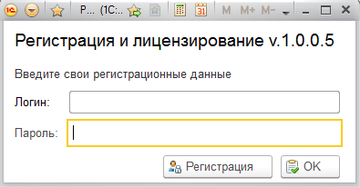
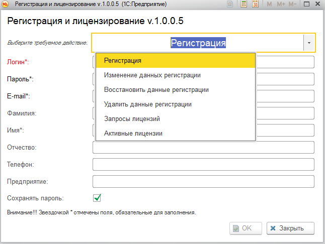
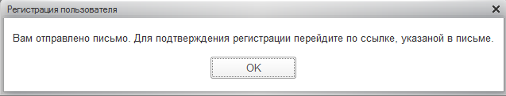
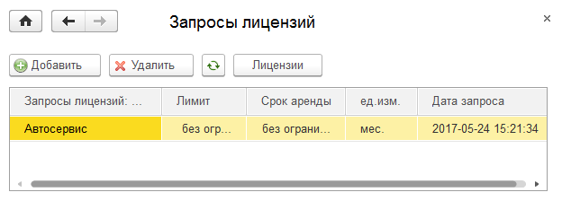
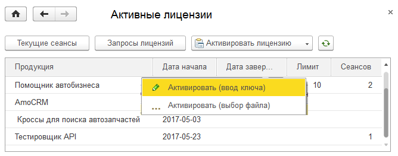
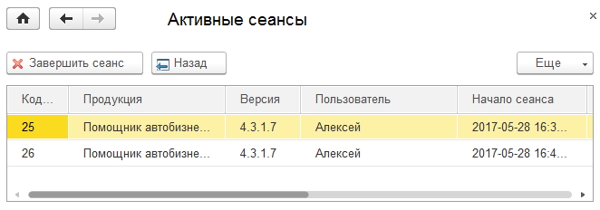

Для работы с новой программной продукцией компании «Ниракс» обязательно требуется регистрация пользователей. Это касается всех, включая тех, кто хочет поработать в демо-режиме. Пользователь – это не обязательно 1 человек, это может быть группа, например, предприятие. При этом все сотрудники работают как один пользователь.

Регистрация.
При нажатии кнопки регистрация на экране отобразится форма, позволяющая не только зарегистрироваться, но и выполнить другие действия:

При регистрации необходимо ввести следующие обязательные реквизиты:
Логин, Пароль (не может быть пустым), имя и E-mail контактного лица.
Рекомендуется ввести и остальные контактные данные для удобства общения со специалистами нашей компании.
Если вы не хотите каждый раз при входе вводить логин и пароль, то можно установить галочку: Сохранять пароль. Тогда при входе в для этого пользователя логин и пароль будут уже заполнены. Пароль сохраняется на вашем компьютере в хранилище 1С. После того, как данные введены и нажата кнопка ОК, появится сообщение:

Откройте письмо и нажмите на ссылку. При этом вам выйдет сообщение:
Регистрация подтверждена. Приятной работы.
Изменение данных регистрации.
Если вы ошиблись в персональных данных или они у вас изменились, то можно изменить все персональные данные, кроме логина. Так же можно снять или установить галочку – сохранять пароль.
Восстановить регистрационные данные.
Если вы забыли пароль или не смогли подтвердить регистрацию то можно указав логин и E-mail – получить письмо с паролем и, при необходимости, ссылкой на подтверждение регистрации.
Удалить данные регистрации.
В любой момент Вы можете удалить свои регистрационные данные. Однако, при этом, все имеющиеся у вас лицензии пропадут, даже если вы повторно зарегистрируетесь с этим же логином.
Запросы лицензий.
После того, как регистрация и ее подтверждение произведено вы можете запросить лицензию на любой программный продукт. Для этого достаточно нажать кнопку добавить и выбрать необходимый программный продукт. После этого необходимо связаться с техническими специалистами компании «Ниракс» (контактный телефон +7(495)540-47-01 для регистрации лицензии.

Клиентские лицензии подключаются на платной основе. Если Вам требуется работать одновременно нескольким пользователям, достаточно приобрести лицензии на необходимое количество пользователей (лимит). Кроме того вы можете взять программный продукт в аренду на любой срок.
Активные лицензии.
После того, как ваша запрос обработан и выдана лицензия, запись в запросах исчезнет, и появится в списке лицензий. 
Лицензию вы также можете получить в виде файла, содержащий ключ активации.
При этом не нужно делать запрос лицензии, а активировать лицензию выбрав файл с ключом или введя ключ вручную. При этом в списке появится продукт, лицензию на который вы активировали.
Текущие сеансы
В списке активных лицензий имеется колонка – сеансы. Она отражает количество активных сеансов в настоящий момент по данной лицензии. Более подробную информацию можно посмотреть, нажав кнопку «Текущие сеансы».

Если в процессе эксплуатации модуля количество одновременно работающих пользователей превысит количество, определенное в лицензии, либо какие-то сеансы не были завершены из-за сбоя системы, то последующие пользователи подключаются не могут. При необходимости можно отключить пользователя, нажав кнопку «Завершить сеанс».